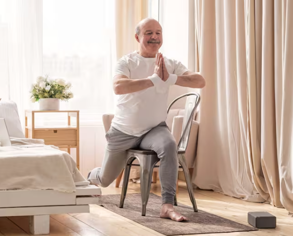
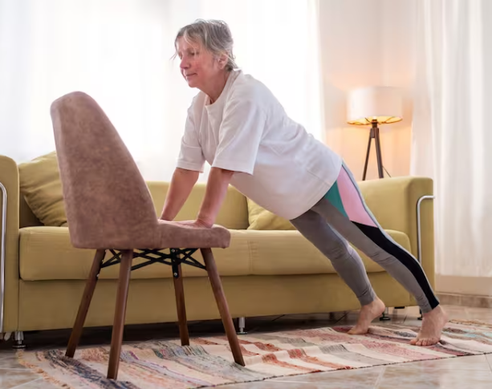

Un aspecto que muchos practicantes adoran del yoga es lo acogedor e inclusivo que puede ser. Esta antigua práctica de movimiento y meditación es apta para todos. Y no hay requisitos previos para probarla, salvo la curiosidad y el deseo de mejorar la condición física, la flexibilidad y la fuerza.
Si quieres probar el yoga en silla, puedes empezar con las posturas que se describen en esta página. Puedes hacer los ejercicios en secuencia o elegir un par de movimientos para probarlos cuando quieras un estiramiento rápido.
lrededor de los años 90, mientras el yoga comenzaba a afianzarse y expandirse como práctica habitual en la Argentina, una de sus ramas evolucionó hacia un enfoque terapéutico con el acompañamiento y el respaldo de médicos y kinesiólogos, que se interesaron en su práctica y dieron cuenta de los beneficios que brinda tanto en la promoción de la salud así cómo en la recuperación de patologías. De esta manera, comenzaron a adaptar nuevas posturas y modalidades para expandir sus beneficios, dando origen al denominado yoga en silla, una práctica indicada especialmente para aquellos que por algún motivo o condición, no pueden trabajar en el suelo o tienen dificultad de sentarse o levantarse del piso sin ayuda. lrededor de los años 90, mientras el yoga comenzaba a afianzarse y expandirse como práctica habitual en la Argentina, una de sus ramas evolucionó hacia un enfoque terapéutico con el acompañamiento y el respaldo de médicos y kinesiólogos, que se interesaron en su práctica y dieron cuenta de los beneficios que brinda tanto en la promoción de la salud así cómo en la recuperación de patologías. De esta manera, comenzaron a adaptar nuevas posturas y modalidades para expandir sus beneficios, dando origen al denominado yoga en silla, una práctica indicada especialmente para aquellos que por algún motivo o condición, no pueden trabajar en el suelo o tienen dificultad de sentarse o levantarse del piso sin ayuda. “Cuando trabajamos de pie, muchas veces se utiliza la silla como apoyo para estabilidad. Luego, al momento en que, en una clase normal de yoga iríamos a trabajar a nuestro mat, los alumnos se sientan y trabajan en la silla. Pero no se trata solo de realizar las posturas adaptadas a la silla, sino también de hacer ejercicios de coordinación, respiración y, por supuesto, relajación. Además, utilizamos diferentes elementos, como pelotas, ladrillos de goma, almohadones y bandas”, explica Silvana Pérez Vieyto, profesora del Centro Argentino de Yoga Miriam Vieyto.
“Cuando trabajamos de pie, muchas veces se utiliza la silla como apoyo para estabilidad. Luego, al momento en que, en una clase normal de yoga iríamos a trabajar a nuestro mat, los alumnos se sientan y trabajan en la silla. Pero no se trata solo de realizar las posturas adaptadas a la silla, sino también de hacer ejercicios de coordinación, respiración y, por supuesto, relajación. Además, utilizamos diferentes elementos, como pelotas, ladrillos de goma, almohadones y bandas”, explica Silvana Pérez Vieyto, profesora del Centro Argentino de Yoga Miriam Vieyto. De esta manera, el mundo del yoga se abre a aquellos que de otro modo podrían quedar excluidos debido a limitaciones físicas o incomodidad con las colchonetas y posturas de yoga tradicionales. “El yoga en silla es parte del yoga terapéutico, una práctica que surgió a partir de la necesidad de personas con movilidad limitada, especialmente adultos mayores. La idea es adaptar posturas y movimientos del yoga para que puedan ser practicadas por todos aquellos que tengan algún tipo de limitación física”, señala por su parte Karen Elizaga, profesora de yoga integral, yoga terapéutico y terapeuta de shiatsu. Y añade: “El objetivo es ayudar a liberar tensiones, mejorar la circulación energética y sanguínea y, sobre todo, enseñar a usar la herramienta más importante con la que contamos, que es la respiración. Esta práctica nos ayuda a relajar el estrés y la ansiedad”. Como terapeuta de shiatsu, Elizaga ha trabajado mucho con personas mayores. Y si bien esa y otras técnicas de masaje le resultaron muy beneficiosas, destaca los beneficios del yoga o el chikung como una manera de tratarse a sí mismo. “Brindar esta herramienta a quienes se sienten más vulnerables es muy importante”, subraya la experta, que con el tiempo ha desarrollado su propio método y desde hace diez años dicta este tipo de clases.
Así, las posturas de mayor o menor dificultad son indicadas de acuerdo con la patología o dificultad de cada alumno. No hay posturas exigidas, sino que se adaptan a las diferentes posibilidades o limitaciones para lograr mayores beneficios y movilidad. “Los beneficios del yoga en la salud, a nivel físico, mental y emocional se obtienen a través de la práctica de la disciplina en su conjunto, no en realizar una postura perfecta. Practicar yoga es ir al movimiento consciente, al control de tu respiración, aprendiendo a usarla como una herramienta para el manejo de tus emociones; meditar para promover tu concentración, discernimiento y bajar los niveles de estrés, además de trabajar la tonificación y elongación muscular, equilibrio y estabilidad”, apunta Pérez Vieyto. Además, agrega que la adaptación del yoga en silla hace que esta práctica pueda llegar con todos sus beneficios a personas que, de otra manera, quedaban excluidas. Y aclara que en las clases no utilizan las sillas convencionales, sino unas sillas plásticas reforzadas, con apoyabrazos. “Esto se debe a que la silla no debe ser tan baja, porque dificulta sentarse y levantarse, y tampoco debe ser de metal, porque desliza. Debe tener respaldo de apoyo, al cual le ponemos un almohadón para facilitar que la espalda esté erguida, y el apoyabrazos es fundamental para la estabilidad”.